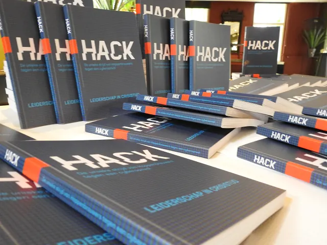
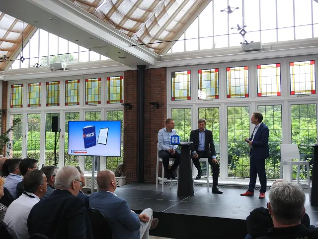
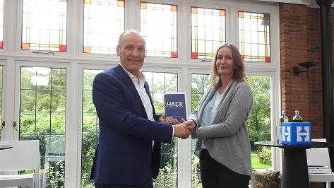

Nieuws ·
Hoppenbrouwers Techniek deelt unieke strijd met cyberaanval in boek ‘

Dit bericht uit ons archief verscheen op 15 september 2022 op NieuwsNijmegen.nl. Data, tijden en prijzen kunnen inmiddels anders zijn.
Vught, 14 september 2022
Er moet een meldpunt komen voor bedrijven die zijn gehackt. Dit meldpunt à la 1-1-2 kan meteen eerste opvang en hulp bieden bij een ‘digitaal ongeval’. Directeur Henny de Haas van Technisch dienstverlener Hoppenbrouwers Techniek, pleitte hiervoor tijdens een symposium op 14 september 2022 over Cybercriminaliteit in Vught. “Ook al ben je verzekerd tegen cybercrime en krijg je uiteindelijk hulp van externe professionals, voor de eerste acties zit je met je handen in het haar. Een centraal loket kan helpen om direct en slagvaardig te reageren. Geen overbodige luxe, want het is niet de vraag of je wordt getroffen, maar wanneer,” aldus de Haas.

Hij is ervaringsdeskundige tegen wil en dank. In juli vorig jaar werd zijn bedrijf Hoppenbrouwers met ruim 1600 medewerkers en 20 vestigingen in het land, slachtoffer van een wereldwijde cyberaanval. Dankzij een unieke gezamenlijke krachtinspanning van de medewerkers kon worden voorkomen dat de activiteiten van het bedrijf stil kwamen te liggen. Sindsdien zet Henny de Haas zich ervoor in om bedrijven en organisaties bewust te maken van de enorme impact van een hack. Zo wees hij al eerder in een gezamenlijke brandbrief met VNO-NCW aan minister van Justitie en Veiligheid Dilan Yeṣilgöz-Zegerius op het belang van een snelle melding van actieve cybercriminelen in Nederland, zodat bedrijven extra alert kunnen zijn. Bovendien pleit hij voor een deltaplan voor ICT, waarmee de online veiligheid in Nederland op lange termijn gewaarborgd kan worden. De minister heeft hierop nog niet gereageerd.
Boek ‘Hack’
De kans dat bedrijven te maken krijgen met een brand is 1 op de 8.000, de kans op een inbraak is 1 op de 250 en de kans op een cyberaanval is 1 op de 5*. Uit angst voor reputatieschade treden de meeste bedrijven die dit overkomt er over het algemeen nauwelijks mee naar buiten. Henny de Haas heeft echter juist bewust gekozen voor openheid. In het boek ‘Hack’ vertellen hij en zijn medewerkers over hun bijzondere strijd tegen de cyberaanval en de impact die de gebeurtenis heeft. Hoppenbrouwers vindt het belangrijk deze ervaringen breed te delen, om bedrijven bewust te maken van de impact van een cyberaanval. Henny de Haas, directeur-eigenaar zegt: ”Naast bewustwording hoop ik dat dit boek de overheid meer inzicht geeft in de grote invloed van cybercriminaliteit op het bedrijfsleven. En dat het ertoe leidt dat er stappen worden gezet, zoals het 115-alarmnummer.”

Wereldwijde hack
De hack waar Hoppenbrouwers in juli 2021 mee te maken kreeg, was onderdeel van een wereldwijde aanval via het Amerikaanse softwareprogramma Kaseya. De Haas geeft aan: ‘We schrokken enorm toen de aanval ons overkwam op een willekeurige vrijdagmiddag, maar het gaf ons ook veel inzichten. Door de aanpak van de daders (Russische organisatie REvil) op wereldwijde schaal hadden we deze aanval niet kunnen voorkomen. Echter, door onze uitstekende informatiebeveiliging en de grote inzet van bijna 200 medewerkers met en zonder ICT-kennis, kregen we de gevolgen ervan wel in dat weekend onder controle. Hierdoor heeft ’t ons slechts 400.000 euro gekost, terwijl de schade van een dergelijke aanval vaak enorm is en een periode van drie weken in beslag neemt, daarnaast eisen cybercriminelen meestal 2% van de jaaromzet aan losgeld.’
Openheid
In tegenstelling tot veel andere Nederlandse bedrijven die te maken hebben met cybercriminaliteit, was de directeur van Hoppenbrouwers vanaf het begin heel open over de hack waarvan zijn bedrijf slachtoffer was geworden. Hierdoor werd hij door veel verschillende media benaderd en daardoor ook door allerlei bedrijven. Die brede belangstelling was voor de technisch dienstverlener aanleiding om de ervaringen te delen in een boek, genaamd ‘Hack’. Hierin wordt nagenoeg van minuut tot minuut weergegeven wat zich op allerlei fronten bij Hoppenbrouwers afspeelde vanaf het moment dat de hack werd ontdekt, totdat het bedrijf na twee dagen weer live ging. Een managementboek, maar tegelijkertijd ook een spannend jongensboek.
Henny de Haas overhandigde tijdens een seminar over cybercriminaliteit, het eerste exemplaar aan Petra Oldengarm, directeur van Cyberveilig Nederland. Zij benadrukte tijdens de paneldiscussie, evenals de andere sprekers Pim Takkenberg (directeur Cybersecurity bij Northwave) en Piet Bel, senior alliance manager bij AMSL hoe belangrijk het is het risico van cybercriminaliteit zeer serieus te nemen en je ertegen te beschermen. Om het groeiende probleem van ransomware de baas te kunnen worden, is openheid over incidenten wat Oldengarm betreft essentieel.
Het boek ‘Hack’ is vanaf vandaag downloadbaar via de website van Hoppenbrouwers.
Ook deelt het bedrijf het boek proactief met medewerkers en relaties.
Over Hoppenbrouwers Techniek
Hoppenbrouwers Techniek begon ruim 100 jaar geleden als eenmanszaak in Brabant en is inmiddels uitgegroeid tot een modern technisch dienstverlener met het Predicaat Koninklijk. Het bedrijf is de technisch dienstverlener die van A tot Z ontzorgt. Vanuit haar 20 vestigingen in heel Nederland ontwerpt, installeert en onderhoudt Hoppenbrouwers elektrotechnische en werktuigbouwkundige installaties voor bedrijfsleven, industrie, zorginstellingen, scholen en particulieren. Eén van de grootste succesfactoren zijn de medewerkers; zij staan altijd op één. Zij krijgen volop kansen om zich op uiteenlopende gebieden te ontwikkelen en er is veel aandacht voor werkplezier. Tenslotte zorgen tevreden medewerkers voor tevreden klanten.